Rojin Aliehyaei Spring 2019 CS 7643 Deep Learning: Class Project Georgia Institute of Technology Link to Codes
1 Abstract
One or two sentences on the motivation behind the problem you are solving. One or two sentences describing the approach you took. One or two sentences on the main result you obtained.
Chest X-ray (CXR) is one of the most effective way in medical diagnosis task and incorrect or delayed evaluation of CXR can harm patients.
Thus, having a reliable software tool for supplementing radiologists to evaluate CXR images is indispensable.
In this study we utilize various loss functions based on supervised as well as weakly supervised classification approach.
First, we implement a CNN based model that helps detecting different pathologies.
Next, a class activation map is constructed for each image instance that has ground truth bounding boxes. We approximate the location of pathology using the class activation map (as shown in Figure 1 below).
The best results using supervised approach achieved by Binary Cross Entropy loss with AUROC and accuracy of 79.9% and 91.6%, respectively. On average our AUROC is 1.5% higher than original study by Wang et al. The classification accuracy using semi-supervised approach is 78.5%.
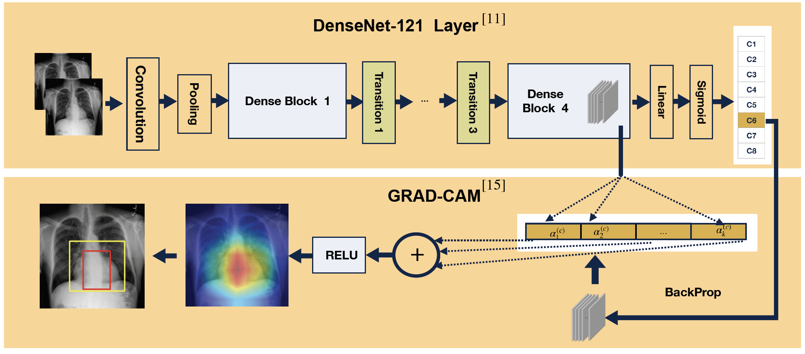
Figure 1: Classification and Localization of Pathologies on CXR images
2 Introduction / Background / Motivation
What did you try to do? What problem did you try to solve? Articulate your objectives using absolutely no jargon.
Chest X-rays (CXR) is one of the most effective way to diagnose cancer, infection, and chronic lung conditions.
Due to increasing demands for CXR readings, it has become difficult for the radiologists to keep up, creating a backlog even though a timely reading of CXR is essential to patients' health.
Thus, having a reliable tool for detecting and evaluating them is beneficial [1].
In this project, we implement a Deep Convolutional Neural Network (DCNN) for pathology detection using Chest X-ray images.
We use the public ChestX-ray8 dataset from the NIH Clinical Center [2].
First, we implement the base model using the knowledge obtained from the latest implementation of DCNN on CXR images [1-4]. In addition, we adopt new approaches (loss functions) for pathology detection on ChestX-ray8 dataset.
How is it done today, and what are the limits of current practice?
Disease diagnosis using Chest X-rays is a challenging task which is conducted by expert radiologists.
Differentiating various pathologies is a difficult and error-prone task.
Developing Computer Aided Diagnosis (CAD) systems that assist radiologists in interpretation of medical images is one of the major research topics [1, 5, 6, 7, 8 , 9]. Some researchers applied traditional machine learning methods such as SVM and KNN to medical images.
A limitation of these approaches is that they do not process the image's pixels directly and mainly rely on dimensionally reduction and highly customized feature engineering methods.
In addition, these techniques are usually labor intensive and not generalizing well [1, 8].
Another challenge is related to using blackbox machine learning methods. A problem of using such approaches for medical applications is that we need some ways assessing the confidences in their predictions. Finally, limited size of accurate and labeled dataset to train a reliable classifier is another challenge in medical image processing field.
Deep Learning based CAD systems have been successfully used in medical application such as eye disease diagnosis, cancer detection, and lung nodule localization [1, 5, 9]. There also have been recent effort for detecting certain pathologies such as Pneumonia using DCNN [4]. A large number of papers on CXR dataset casts the problem as binary or joint binary classification problem rather than multi-label class problem that considers the relations between labels.
As we explained in subsequent section CNN-based models and tools have potentials to overcome these limitations to some extent.
Who cares? If you are successful, what difference will it make?
Thousands of people die from lung infection every year in the US. According to a study in a hospital in the UK, cancer patients are harmed significantly because their CXR are not evaluated properly [3].
Chest X-rays is one of the fastest, most affordable and effective method in diagnosis process. With growing number of medical images, handling a large amount of CXR is a tedious and error-prone task. Thus, a computer aided system that detect such diseases is beneficial for radiologists.
In addition, the insights obtained from implementing various loss functions in this study could be helpful to study other multi-labeled dataset with similar characteristics.
3 Approach
What was the structure of your problem? How did the structure of your model reflect the structure of your problem?
The inputs in this project are medical images and we model the classifier using DCNN. The ground truth is given in two formats.
(1) For each image we have a list of pathologies. If there are no diseases found, it is labeled as normal case. (2) Hand-labeled bounding-boxes for a small subset of images.
Since each image can be associated with more than one label, the labels are following one-hot encoding.
For predicting the bounding-boxes, we need to use a method that generates a class activation map for an image and the detected class. We can generate the heatmap and approximate the bounding box using the class activation map. Further details are provided in section 3.4.
What did you do exactly? How did you solve the problem? Why did you think it would be successful? Is anything new in your approach?
Convolutional Neural Network (CNN) is used in various computer vision tasks. It performs astonishingly good in computer vision related applications. CNN handles image’s pixels directly to learn spatial hierarchies of features. Unlike traditional machine learning methods, CNN does not require highly customized feature engineering efforts. Instead, convolutional layer performs feature extraction. One important feature of convolutional operation is weight sharing that allows the extracted local feature patterns become invariant as kernel moving across image positions. It also has less parameters comparing to fully connected layers [10].
CNN-based models have been applied successfully to the field of radiology.
Thus, pathology detection using CXR is a natural application domain for deep learning. The details about CNN models that are used in study are discussed in section 3.1.
The problem of limited size of accurate and labeled medical images for training can be solved to some extent by transfer learning. In fact, we use pre-trained weights on different domain to initialize our model’s weight [3, 7]. The knowledge obtained from leaning on a different set of tasks and domain can still help learning a prediction function for our domain and improving generalization.
For the loss function, first we implement standard approaches such as binary cross entropy (bce) and weighted binary cross entropy (wbce-v1 and wbce-v2).
In addition, we study the dataset using two new approaches. First one is a new loss function that applies pairwise ranking to image classification problem [11]. In second new approach, we train the model with weak labels. Specifically we consider partial pairwise similarities between images for training [12].
The left diagram in Figure 2 shows the classification using supervised learning that used the label information completely.
The diagram on the right side of Figure 2 shows the approach that train the model with weak labels and can be viewed as a clustering approach.
More details about each approach can be found in section 3.2.
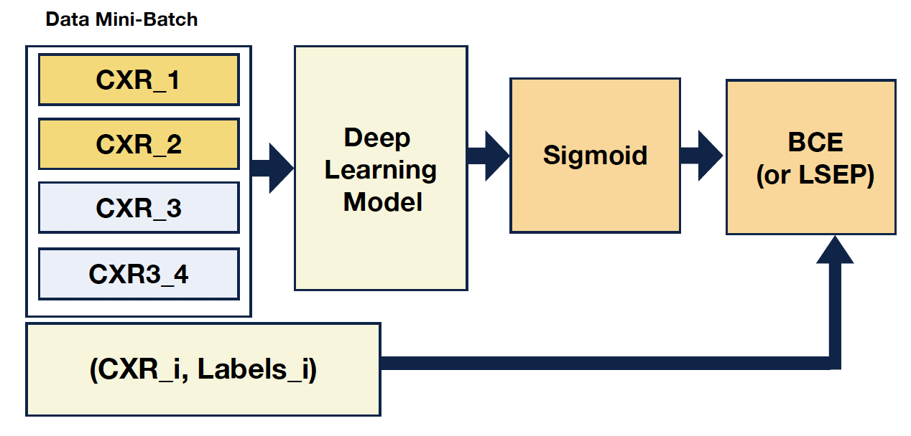
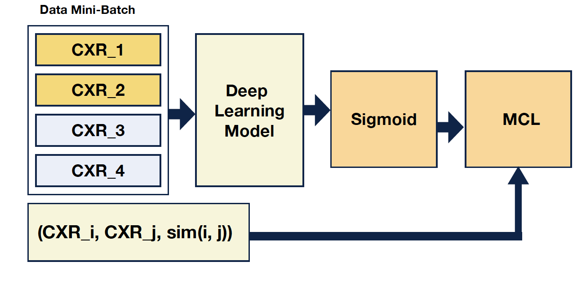
Figure 2: Approaches based on Fully Labeled and Weakly Labeled Data [13]
As discussed earlier, a limitation of deep learning model for medical applications is its blackbox nature. Generating a class activation map and finding spatial locations of a particular disease class on original image is one way to address this problem. Thus, in this project we generate a heatmap corresponding to the detected class for each given input image. This helps understanding how the model decides to predict a particular class. Finally, we display a bounding box on the CXR image using class activation map generated for a given instance and the corresponding predicted class(es).
The main steps in this project are: data preprocessing, implementing neural network model, implementing various loss functions, creating heatmaps using Grad-CAM, and finding bounding boxes. We will discuss more details about the technique for creating heatmaps and bounding boxes of activated classes in sections 3.4.1 and 3.4.2.
3.1 Model Architecture
We use DCNN which is a good model for image processing task. We choose VGG-16, ResNet-50, and DenseNet-120 as model architectures. We found Densenet [11] is a good choice for our model. DenseNet improves the gradient flow in the network and makes the optimization of DCNN tractable. We initialized the models' weights from a model pre-trained on ImageNet. We set the number of outputs in fully connected layer to number of classes (8) and add a sigmoid function after the fully connected layer.
What was the loss function?
3.2 Loss Functions
Next, we implement various loss functions. Specifically, we will study three approaches in developing the loss functions.
3.2.1 Loss Function 1: Unweighted and Weighted Binary Cross Entropy Loss Function
First, we study the model using binary cross entropy loss (unweighted and weighted versions).
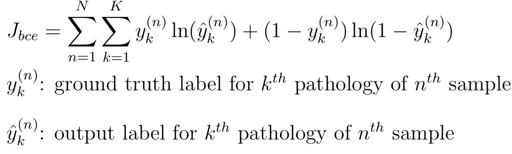
Since we use one-hot encoding, the images label are relatively sparse and there are unbalanced numbers of pathologies and normal cases. Thus, we use positive and negative weights to encourage learning of positive example [2, 4].
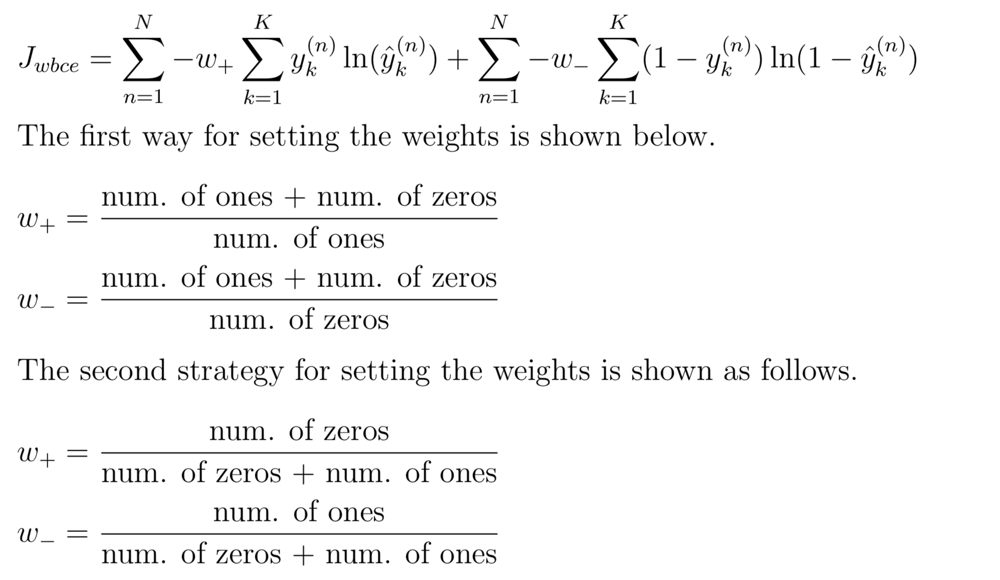
3.2.2 Loss Function 2: Log-Sum-Exponential Pairwise Ranking Loss
In the second step, we study a new approach [12] that applies pairwise ranking to image classification problem. We implement log-sum-exponential pairwise ranking loss (LSEP) that assigns higher rank to a positive label than majority of negative labels. LSEP loss is a convex function.
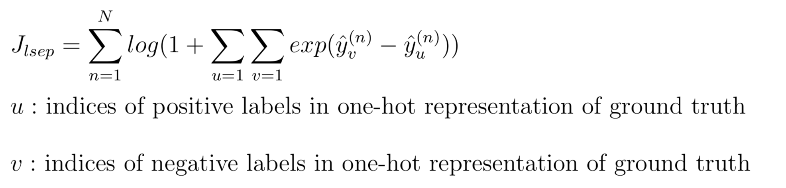
3.2.3 Loss Function 3: Weakly Labeled Data (pairwise similarity approach)
Finally, we perform a preliminary study to train a neural network using pairwise similarities/dissimilarities between data instances, inspired in part by the work of Hsu and Kira [13].
Specifically, we don't directly uses the class label and only define a similarity measure between 0 to 1 that defines the degree of similarity between each pair of instances.
This allows us to explore ChestX-ray8 dataset using clustering approach, which may lead to new insights from the data.
We adjust the MCL loss by Hsu et al. [14] for multi-label dataset and define the similarity measure as follows:
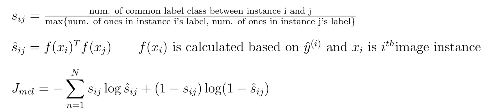
What representations of input and output did the neural network expect? How was the data pre/post-processed?
3.3 Input Data Representation and Pre-processing
Before passing an image as an input to the model, we tile the picture to three channels. Next, we resize and crop the images to 224 X 224. We cast the input to tensor and normalize the tensor image with mean and standard deviation of images from ImageNet. For data augmentation, we perform random crop and horizontal flipping.
3.4 Output Data Representation and Post-processing
Since ChestX-ray8 is a multi-label and multi-class dataset, we choose one-hot encoding for representing the labels. Each instance's label is a 8-dim binary array. If the element i of label is equal to 1, it means the pathology belongs to class i is detected in the corresponding image.
The below diagram shows the labels' co-occurrence statistics for 8 pathology classes.
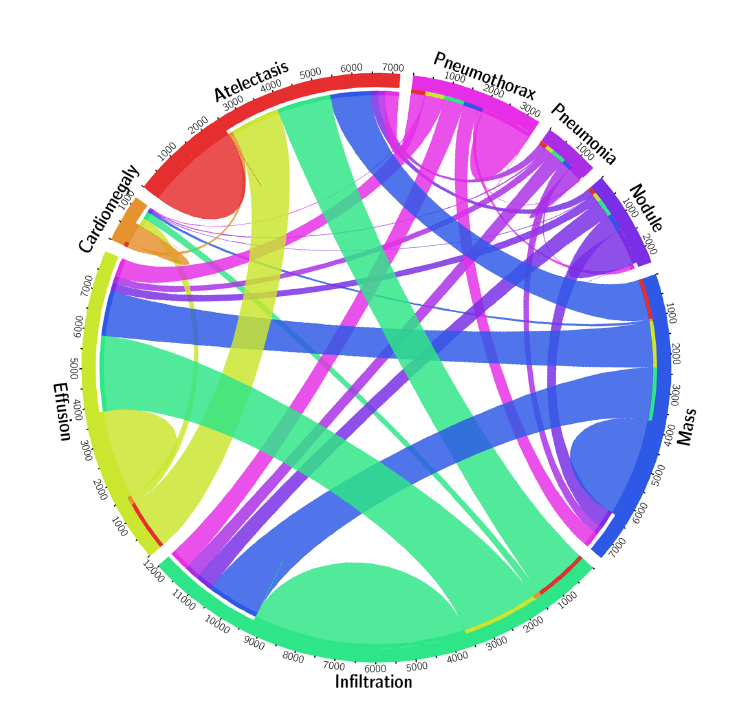
Figure 3: Co-occurrence Statistics for 8 Pathology Classes [2]
3.4.1 Creating Heatmaps using Grad-CAM
In this step, we obtain the score for each class through the forward propagation of the image using the trained model.
The gradient for each class c with respect to convolutional feature map is calculated using a backpropgation step.
Next, a weighted linear combination of forward activation map passes through ReLU function that results in a class activation map (CAM) [15]. The output of Grad-CAM is overlaid on the original CXR image and a heatmap is generated. The heatmap shows which region(s) of the image is looked by the model for classifying the input as class c.
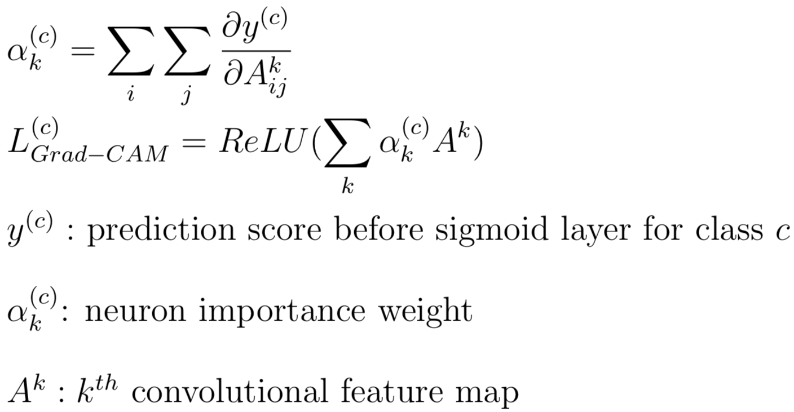
3.4.2 Finding Bounding Boxes
Test dataset contains hand annotated ground truth (GT) boxes. To show the performance of the model with respect to the ground truth, we approximate and visualize the bounding boxes using generated heatmaps overlaid on original image. This will be done by compressing horizontal, vertical, and diagonal segments and encoding (x, y, w, h) of the bounding boxes. The functions provided in OpenCV library are used for localization.
What problems did you anticipate? What problems did you encounter? Did the very first thing you tried work?
A problem that initially encountered was the large size of original dataset (45.7 GB) that makes the running time so long. Thus, as we explain in section 4.1, we use a random subsample of data to run the experiments which saves the time and resources. As a result additional preprocessing steps required to update the training, validation list, and test list. An early assessment of an implemented model on Google cloud shows the metrics improved when we using whole data rather than a subsample of data. Using a subsample of data allowed me to explore alternatives architectures, loss functions and tune the hyper-parameter as needed.
Even when a subsample of data used, the running time on laptop with 16 GB takes hours.
Using GPU on Google cloud helps training the model much faster. But training the model with MCL loss still takes a long time. This could be related to claculating n(n-1) similarity measures for training.
Another problem with experiments was large gaps between AUROC during training and validation. Various strategies applied to overcome overfitting without hurting the performance. In section 4.4, the strategies that help to address overfitting are discussed.
Finally, implementing a new loss functions, linking Grad-CAM method and localization techniques on the dataset were challenging and interesting learning process.
4 Experiments and Results
How did you measure success? What datasets did you use and what experiments did you carry out? What were the results, both quantitative and qualitative? Did you succeed? Did you fail? Why?
4.1 Dataset, Evaluation Metrics, and Experimental Settings
The ChestX-ray8 consists of 108,948 frontal-view X-ray images that are collected from 32,717 patients.
Each image may labeled with one or multiple label(s) indicating common thoracic pathologies such as Atelectasis, Cardiomegaly, Effusion, Infiltration, Mass, Nodule, Pneumonia, and Pneumothorax.
Since the original dataset is very large, we use a subset of data (5,606 images), that is a set of random samples from dataset that can be accessed at
Kaggle website.
We split the dataset into training (70%), validation (10%), and testing (20%). We also ensure there is no patient overlaps between these splits. We run the code for maximum of 10 epochs and choose the model with the best performance. We also visualize the predicted bounding box and ground truth for annotated images in test data. For numerical evaluation of bounding box visualization we calculate the Intersection Over Union (IoU).
We use the ground truth to assess the performance of our algorithm.
Accuracy and AUROC (Area Under the Receiver Operating Characteristics) values are used for performance evaluation.
We also measure the success by comparing our best results against the results by Wang et al. [2]. Specifically, we compare the best AUROC values achieved on validation dataset using our implemented models with results from paper by Wang et al. [2].
For assessing the pairwise similarity approach, we compare the best possible accuracy from the model with MCL loss with the results of models built using supervised approaches. Although we do not expect the model built using pairwise similarity beats the cross entropy based approaches.
What hyperparameters did the model have? How were they chosen? How did they affect performance? What optimizer was used?
4.2.Initialization and hyper-parameter tuning
For initializing the hyper-parameters, we study the existing literature and set the parameters accordingly. Later, we adjust the parameters when needed. The hyper-parameters are learning rate, regularization parameter, initial weight, and batch size.
The initial learning rate is set to 0.0002. For some of the settings we decrease the learning rate to 0.0001 and 0.00005. The details provided in Table 1. The experiments show the larger learning rate causes divergence and a smaller rate just slows down the optimization process.
We test the model with both Adam and SGD optimizers. The metric values show Adam has a slightly better performance than SGD.
Adam optimizer with betas (0.9, 0.999) is used for optimization.
Due to limited GPU memory and large image size, we set the batch size to 16.
In the final models, we only set the weight decay when needed.
Finally, CNN model initialized with the weights of pre-trained model on ImageNet.
What Deep Learning framework did you use?
4.3 Deep learning Framework, Libraries and Running Platform
We use Torch/PyTorch as the framework for implementation. The code customized using CUDA library for running on GPU. For running the code we leverage the GPU on google cloud.
Here is a list of used libraries and the way they utilized in this project.
- torchvision.transforms: data augmentation
- torchvision.models: implementing CNN model architecture
- sklearn.metrics: model evaluation
- OpenCV: for generating heatmaps and bounding boxes
- Matplotlib: generating plot
4.4 Results
Did the model overfit? How well did the approach generalize?
To prevent overfitting number of strategies are applied to our models.
1- first, we select an alternative DCNN architecture with less number of layers. Specifically, we choose the VGG-16 and ResNet-50 as alternative models. Although it improves the gap between training and validation but it did not improve the best validation AUROC value.
2- We tune the weight decay parameters.
For some cases it improves the gap between training and validation metric. The results are shown in Figure 4.
For some loss functions, setting the weight decay to a non-zero value decreased the gap significantly, but it did not improve the validation accuracy.
As it is shown below there is large gap between training and validation AUROC of the best model trained using BCE and WBCE.
Thus, we use next strategy for tackling the overfitting.
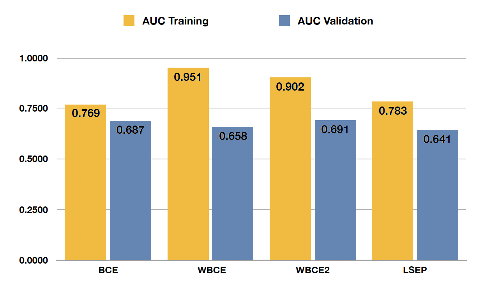
Figure 4: AUROC Value for Training and Validation using DenseNet-121
3- Setting the dropout units in the model. We set the drop rate to 0.3 in our model and it significantly improves the overfitting.
The best results for all loss functions and CNN models are listed in Table 1.
Table 1: Results from Maximum of 10 Epochs
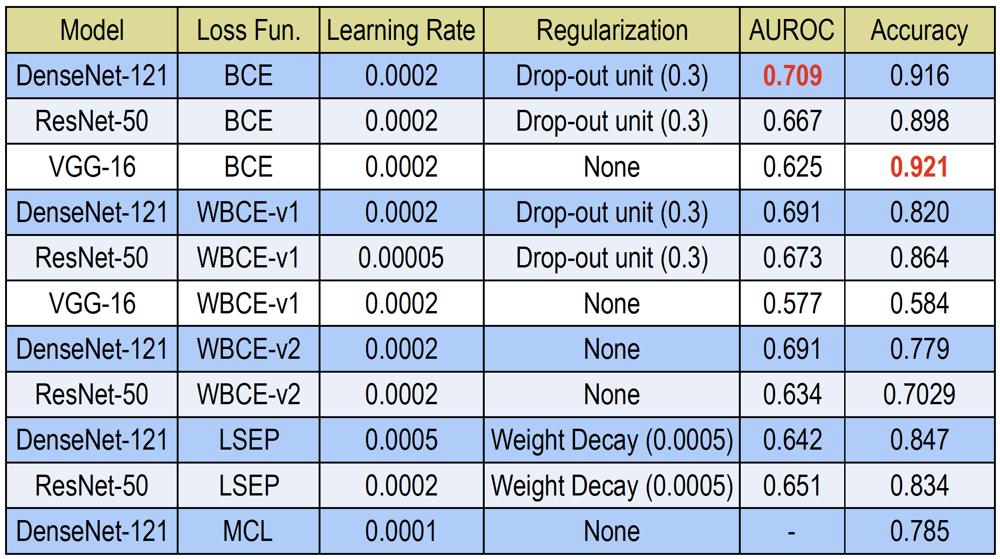
Although LSEP loss reaches a descent performance but it does not beat the cross entropy based models.
The best AUROC and accuracy obtained using BCE. The loss history and AUROC values for training and validation are shown in Figure 5.
We successfully implement the model and the best result is comparable with original paper. The details can be found in the next section. For pairwise similarity approach, we obtain about 79%. As we expected, it does not beat the accuracy of cross entropy based loss.
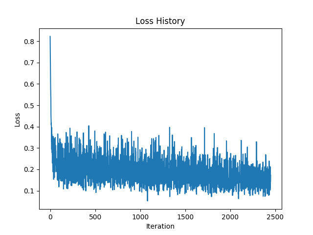
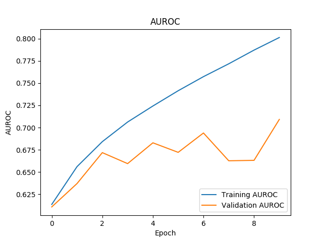
Figure 5: Loss Plot and AUROC using BCE loss
Two sample heatmaps generated by Grad-CAM in Figure 6. The heatmaps show the activated regions corresponding to Cardiomegaly and Effusion classes.
Ground truth and predicted bounding box are shown in yellow and red color, respectively.
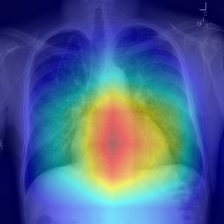
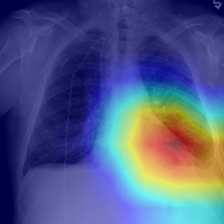
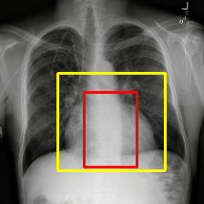
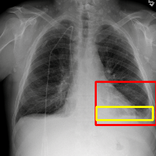
ground truth
predicted
Figure 6: Heatmap and Bounding-Box
What parts of your model had learned parameters (e.g., convolution layers) and what parts did not (e.g., post-processing classifier probabilities into decisions)?
The CNN models are initialized with the weights of pre-trained model on ImageNet.
The kernel's weights are improving further in training process.
Only classifier's weights are trained from scratch. For calculating the accuracy values, we use 0.5 as thresholds for generating the labels from raw prediction scores. The heatmap is obtained using Grad-CAM method. As we explained earlier, the bounding box coordinates obtained by compressing horizontal, vertical, and diagonal segments in generated class activation map.
Analysis
Do the results make sense? Why or why not? Describe what kind of visualization/analysis you performed in order to verify that your results 1) are correct and 2) explain differences in performance from what was expected (e.g. what appeared in papers).
Provide specific claims about why you think your model is or is not doing better, and justify those with qualitative and quantitative experiments (not necessarily just final accuracy numbers, but statistics or other data about what the model is doing).
We compare the AUROC values of our model with the paper by Wang et al. [2].
For five classes our results achieve better AUROC values. For other three classes, the original paper (with wbce-v2 as loss function) has a higher values. The average AUROC of our model across all classes is 70.9% which is about 1.5% higher than average AUROC of the original paper. Our results show BCE loss outperforms other loss functions.
Although LSEP loss reaches a descent AUROC but it does not beats the cross entropy based models.
As it is shown in Table 1 and 2, unlike the original paper, on our dataset WBCE-v2 did not beat BCE. This could be related to using only a subsample of dataset in this study.
Table 2: Comparing our Results versus Original Paper
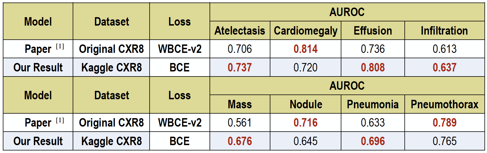
For assessing the weakly labeled dataset that used pairwise similarity approach, we find the best possible accuracy by finding the best assignment of clusters to classes. As we discussed the best accuracy value based on modified MCL loss that is about 79%, while the accuracy of BCE based loss is about 92%.
As it was expected it has a lower performance comparing to cross entropy loss since we did not use the label information directly.
For monitoring the performance, we plot the metric values for training and testing dataset across epochs that are shown in Figure 5. These plots helps adjusting the learning rate and detecting overfitting.
We also visualize bounding boxes obtained for detected classes of each instance. For quantifying the performance of predicted bounding boxes against the ground truth, we use the Intersection over Union (IoU). We calculate the accuracy by thresholding the IoU values over all images that correctly classified by DCNN and their ground truth bounding boxes are provided. Using the thresholds of 0.25 and 0.5 for IoU values, we achieve accuracies of 0.33% and 0.13%, respectively. A sample of such localization are shown in Figure 6.
Generating class activation map helps to address the black box nature of DCNN model to some extent. Generating heatmap and bounding boxes from class activation map helps radiologists understanding which parts of an image looked by the model to generate a positive label.
With growing interest in using CAD systems in the field of radiology, there are researches working on improving the radiologist-CAD interactions. Inappropriate level of trust in CAD affects the radiologist performance negativity [16].
Currently, reliable CAD systems are only considered as tools that supplement the radiologists or health specialists and do not replace them.
An idea for future work is comparing the results from such approaches with other clustering techniques.
In addition, we would like to design a multi-label loss function that outperforms the cross entropy loss.
Team Member Identification
Provide a list of team members and what each member did in a table. When an algorithm was implemented, provide specifics as to which parts your team member implemented and which parts were leveraging open-source code. Your project should include actual implementation of something; do not just download open-source code and tune hyper-parameters. When using external resources, provide references to anything you used in the README!
I worked on this project as an individual, and therefore, all tasks are completed by myself.
- Preprocessing and data augmentation
- Implementation of DCNN models including VGG-16, ResNet-50, and DenseNet-121 in section 3.1.
- Implementation of loss functions as listed in section 3.2.
- Creating Heatmaps as explained in section 3.4.1.
- Generating Bounding Boxes as explained in section 3.4.2.
- Running the code on Google cloud and collecting the results
- Creating tables, plots and diagrams.
What existing code or models did you start with and what did those starting points provide?
The codes in this work are inspired partially by some of the existing codes listed below. I put in a lot of work, effort, and time to implement new codes as well as to extensively modify these existing codes for pre-processing dataset and for creating our models with various loss functions to complete this project.
1- The implementation of loss function for weakly labeled data is inspired by MCL [17] and it is customized for multi-class and the multi-label dataset.